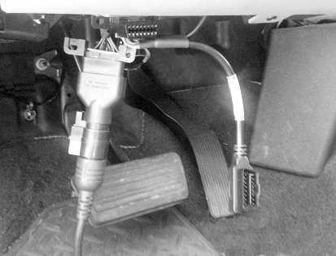
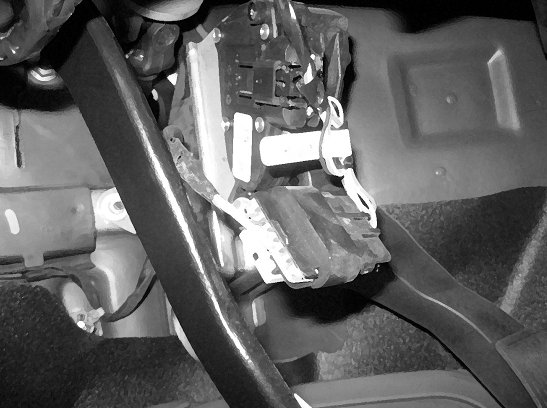
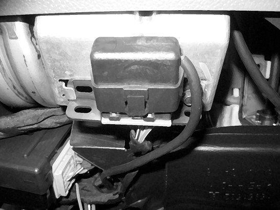
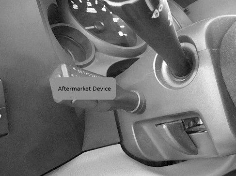
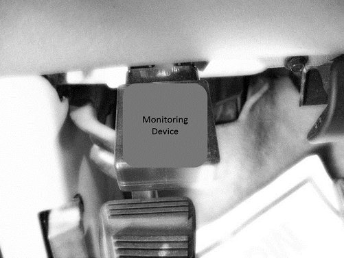
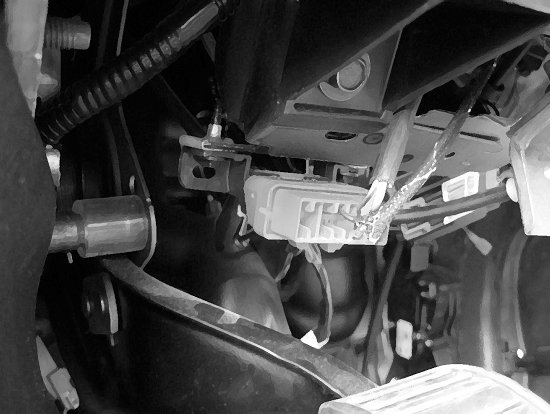
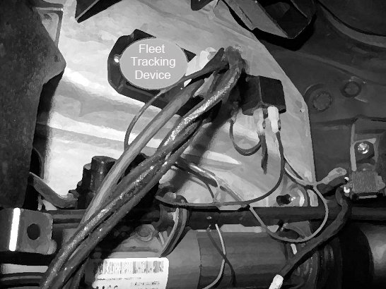

Electrical - Aftermarket Interface Devices Causing Issues
TECHNICALBulletin No.: 13-08-116-001A
Date: March 22, 2013
Subject: Aftermarket ALDL or DLC Interface Devices Causing Multiple Issues
Models:
2006-2014 GM Passenger Cars and Trucks
Supercede:
This bulletin is being revised to add additional possible symptoms, clarify the language and revise the photos. Please discard Corporate Bulletin Number 13-08-116-001 (Section 08 - Body and Accessories).
Condition
Customers may comment on various issues with their vehicle related to high or low speed data bus traffic. These concerns may be widely varied, but some of the known issues are listed below.
The information contained in this bulletin is not meant to single out any one device or symptom, but to provide additional information that may be useful for diagnosing issues that do not have other diagnostic methods to identify the root cause.
Note
This bulletin is being written with a focus on full size truck and full size van along with other fleet vehicles, but could apply to any vehicle.
Known Symptoms (not specific to any one device)
- The radio may not shut off after shutting down vehicle.
- Bus or LAN traffic may stay active leading to a discharged vehicle battery.
- Problems reprogramming modules either because of interference or the device will not allow the bus to power down.
- ONSTAR(R) may lose the ability to provide diagnostic data.
- Various engine and transmission performance issues with SES light set.
- Intermittent driveability issues.
- Reduced power message and codes.
- Stabilitrak(R) message and codes.
- C0561 stored in the EBCM leading to a traction control issue.
- No high speed LAN communication along with various communication U-codes.
- Transmission may not shift for one key cycle (TCM in default mode).
- Erratic gauge readings or flickering displays.
- SES, MIL or CEL light set and numerous DTC communication codes such as U0100, U0101, U186B and U1862.
- Diesel power-up devices causing no power in 4WD low range.
- Erratic electric power steering boost potentially associated with codes U2109, U2107, U2100, B1325, C0000.
- Service Tire Pressure Monitoring (TPM) system light illuminated.
-Cannot relearn TPM
- Specific to Hybrids:
- Reduced propulsion power message.
- Service high voltage charging system message.
Cause
If nothing else can be identified as the root cause of the issue after normal diagnostics as found in SI, check for a device plugged into the Assembly Line Diagnostic Link (ALDL) or Data Link Connector (DLC) for tracking and/or maintenance interval scheduling. Monitoring devices, along with other electronic accessories such as aftermarket cruise control, or police speed checking devices (RADAR or LIDAR) may cause one or more of the concerns listed above.
Many of the problems described could be caused by an open connection on the HSCAN bus. Example: if the device only makes connection with one CAN +, then it will cause bus errors and erratic ECU behavior.
These devices may be removed by the customer for use in another vehicle while theirs is brought in for service. The intent of this bulletin is to identify a potential source of concerns that do not have other diagnostic methods to identify them. The examples below illustrate some of the devices encountered.
Examples:
The monitoring device examples are not specific to any one design, and styles will vary.
Device W/Secondary DLC Connector

This device has another DLC connector on it. The rest of the harness along with the device can be placed out of sight hidden from the technician, who may not notice the diagnostic connector is not in the factory location.
Pedal Mounted Aftermarket Device Interface

Aftermarket Device at ALDL

Aftermarket Device Switch

Monitoring Device Example

Fleet Tracking Device Interface (May Include Rental and Lease Vehicles)

Fleet Tracking Module Plugged Into the DLC

Correction
If SI diagnostics do not identify the source of the issue and if the device is available, attempt to duplicate the condition, and then remove the device to determine if the condition is eliminated.
If the customer's concern is resolved by removing the DLC interface device, inform the customer of the results, and that they should work with the supplier of the device for further resolution.
If the condition is not eliminated with the device removed, continue diagnosing the vehicle with the appropriate Service Information.
Parts Information
There should not be any parts required. If on the rare occasion parts appear to have been damaged by the device or the installation of the device, this would not be a defect covered under the New Vehicle Limited Warranty. For more information on Non-General Motors Parts & Equipment and Original Equipment Alterations, please refer to Article 1.2.2.12 of the Service Policies & Procedures Manual. The repair order must be documented correctly stating factual information on what alteration or product was identified on the vehicle.
Warranty Information
If ALDL interface devices are suspected as the root cause for a customer's concerns, submit a claim using the Z1111 labor operation to document the concern as detailed in the latest version of Corporate Bulletin Number 09-00-89-016 "Warranty Administration - Labor Operation Z1111 - Suspected Tampering or Vehicle Modifications, including submitting the claim under the appropriate labor operation and Customer Satisfaction selection in Global Warranty Management.
If a claim is submitted to GM, follow all existing guidelines within the Service Policies & Procedures and GWM User Manual, Administrative Messages, Bulletins or any other communication format.

Disclaimer